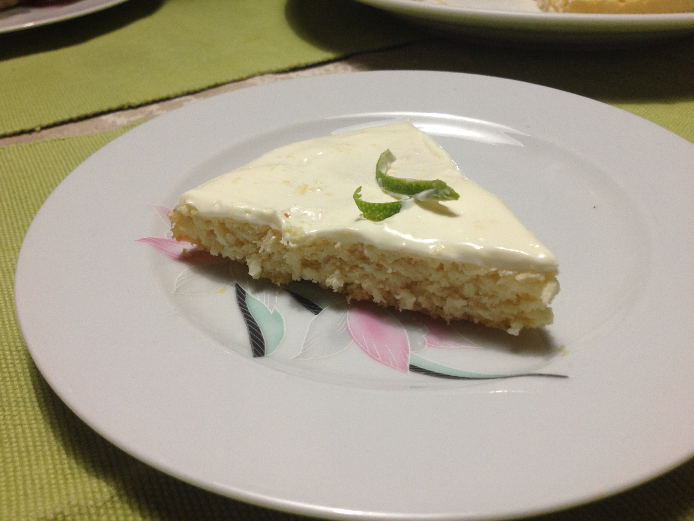
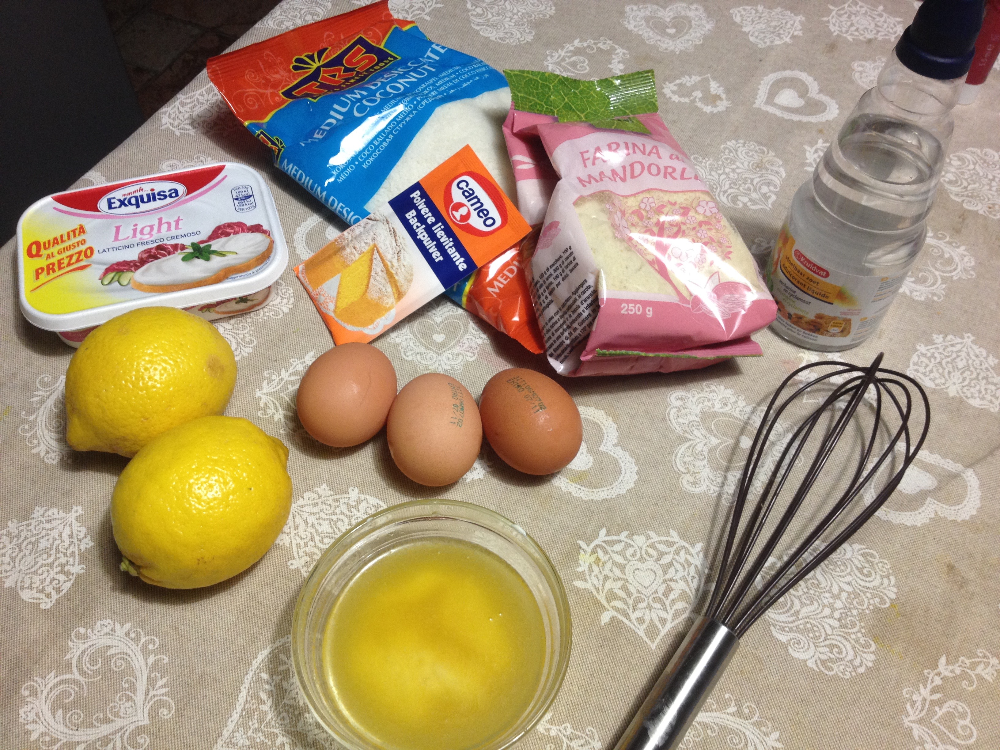
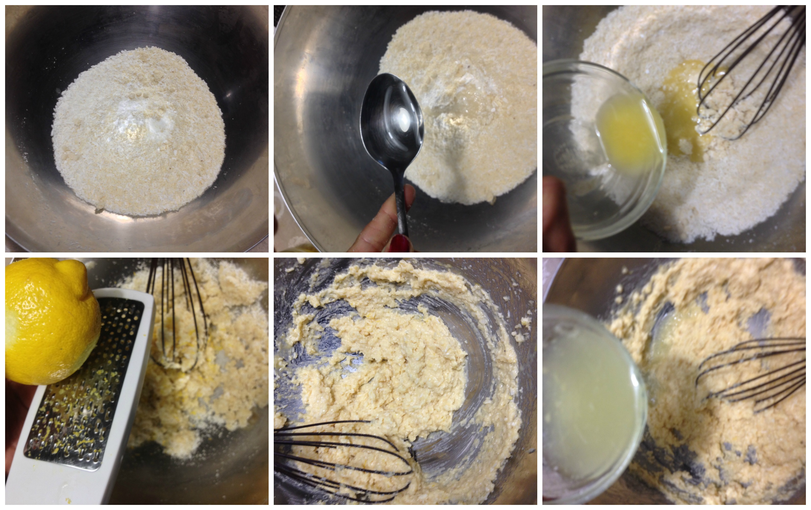
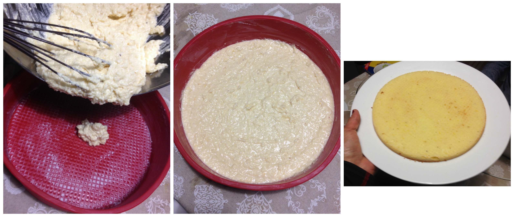
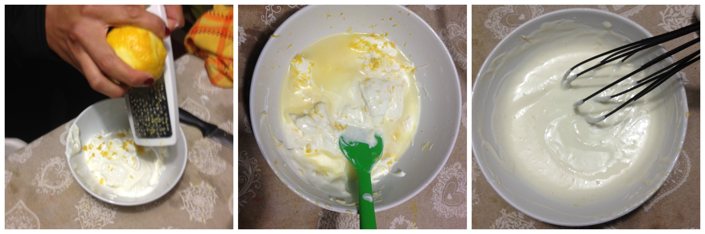
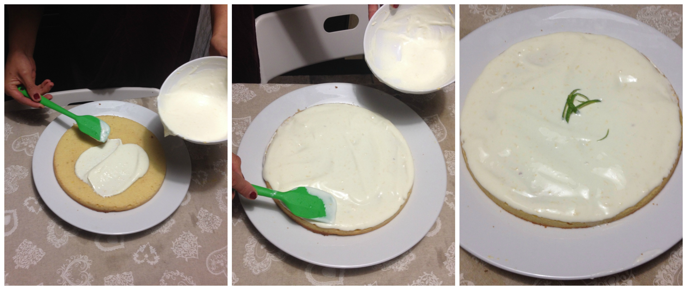
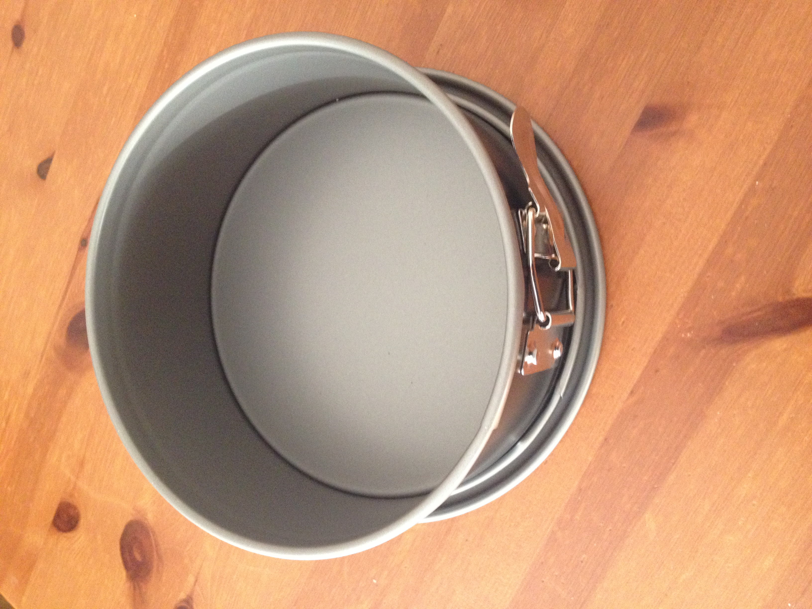

Low Carb Lemon Cream Cake¶

- Serves: 4
- Type: dessert
Background¶
When the tree leaves start to fall, days become shorter and it is cold outside, I do not about you but I really like to eat some cake... But to combine a low carb diet with cake seemed impossible, fortunately I found this easy and nice recipe, I tried my own variations and it was really tasty!. The cream is so tasty that I can compared it with my mom’s NY cheesecake.
Ingredients¶

Cake
- 2 large egg
- Juice from 1 large lemon
- Zest of 1 lemon (you can use the same lemon for the juice)
- 2 teaspoons Baking powder
- 2 tablespoons liquid sweetener or 3 tbsp granulated Stevia
- 100 grams Almonds flour
- 100 grams Coconut flour (desiccated coconut)
- 50 grams Butter (melted)
Cream
- 100 grams cream cheese
- 100 grams greek yogurt (or natural yoghurt)
- Juice from 1 lime (you can also use instead a large lemon)
- Zest of 1 lime (or lemon)
- 1 tablespoon liquid sweetener or 1 1/2 granulated stevia
Decoration - Lemon zest.
Steps¶
Cake
Mix the almond flour, the coconut, baking powder, the liquid sweetener or stevia
Add the melted butter and the eggs one by one, stir the mixture
Add the lemon juice ands zest.
Cake preparation steps
Preheat the oven at 180C.
Grease a baking tin and pour the mixture in it, flat it and bake it at 180°C for 25 minutes (The dough must be high around 1 to 2 cm)
Cool the cake.
Bake at 180°C
Cream
Soft the cream cheese and mix with the greek yogurt in a bowl
Add the liquid sweetener or stevia
Finally, add the lemon juice and the lemon zest and stir with a whisk carefully.
Put the bowl in the refrigerator to chill for about 10 minutes
Mixing the cream
When the cake got cold pour the topping (lemon cream) on it and you can decorate it with some lemon zest and chill it in the refrigerator till the moment to serve.
Decoration and final result
NOTES: it is better to use a detachable baking tin, with a circumference between 18cm and 24cm
